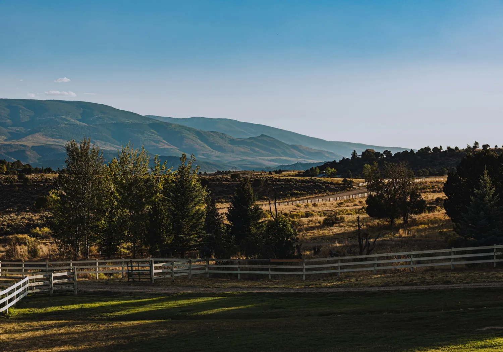

Home/Communities/Carbondale
Living in Carbondale, CO
Where the Roaring Fork meets the Crystal, under Mount Sopris. The top of my range and the bottom of the Aspen market, which makes it the one town here that gets shopped from both directions.
00 Orientation
Carbondale is shopped from both directions at once
Most towns have one market. Carbondale has two sets of buyers arriving from opposite ends of the same valley: people coming down from Aspen and Snowmass looking for something more grounded, and people coming up from the corridor looking for the last town before the price really climbs. That pressure from both sides is why Carbondale holds its value when towns below it soften. The place itself has kept the agriculture around it rather than paving it, so you can be on a town lot walking to a main street or on irrigated ground out the Crystal within about ten minutes.

The town grid
Under Mount Sopris, between the Roaring Fork and the Crystal. Walkable, with a main street that still has hardware and feed alongside the galleries.

Out the Crystal and Missouri Heights
Irrigated ground, horse property and bigger parcels. This is where water rights stop being a footnote and start being the main question. Two parcels of the same size can be worth very different money depending on what is decreed to them and how senior it is.
01 Before you offer
What I would check for you
Carbondale gets shopped from both directions, from Aspen coming down and from the corridor coming up. That keeps prices firm even when the towns below it soften.
Water rights, properly
Colorado water is owned separately from the land and administered by seniority. On irrigated ground out the Crystal, what conveys and whether it is enough are the two questions that decide the value.
Ditch shares and who runs the ditch
A share is one thing. The ditch company, the assessment and the rotation schedule are another. I get you all of it.
Wells outside the town limits
A permitted domestic well has limits on what it may legally be used for. Irrigating a pasture is not automatically one of them.
The septic field, on its own
Separate inspection. On the larger parcels the system is often older than the current owner realises.
Road maintenance out the valley
Private easements are common. Ask who plows it and what that has cost the last three winters.
What the parcel actually is
Irrigated pasture, dry hillside and a usable building envelope are all just acreage in the record. Walk it before you price it.
02 Day to day
Good to know
Schools
Roaring Fork School District RE-1 serves Carbondale. Boundaries change, so confirm a specific address with the district.
Roaring Fork RE-1Everyday
A full main street in town. Glenwood Springs is about twenty minutes down valley for anything bigger.
Town of CarbondaleGetting around
Highway 133 up the Crystal, Highway 82 to Glenwood and Aspen, and the Rio Grande Trail running the length of the valley for bikes.
RFTAThe mountain
Mount Sopris sits at the end of the street, inside the White River National Forest, and the Crystal River comes in from the south. Most of what people do here happens outdoors.
White River National Forest
03 Kevin Atchison
The top of my range and the bottom of the Aspen market, which means it gets shopped from both directions.
Carbondale is the top of my range and the bottom of the Aspen market. If you are coming down from up valley the value here reads very differently than it does coming up from Rifle, and I will tell you honestly which one you are.
I grew up in the Roaring Fork Valley and I work the stretch of it people can still afford. I answer my own phone, there is no team, and if a house is wrong for you I will tell you that before you drive out to it.
Talk to me about CarbondaleGarfield County and the corridor
Nearby towns I work

Come and look
Thinking about Carbondale?
Call or text. I will tell you what your money actually buys here, and what it buys ten minutes down the road.
Get in touch